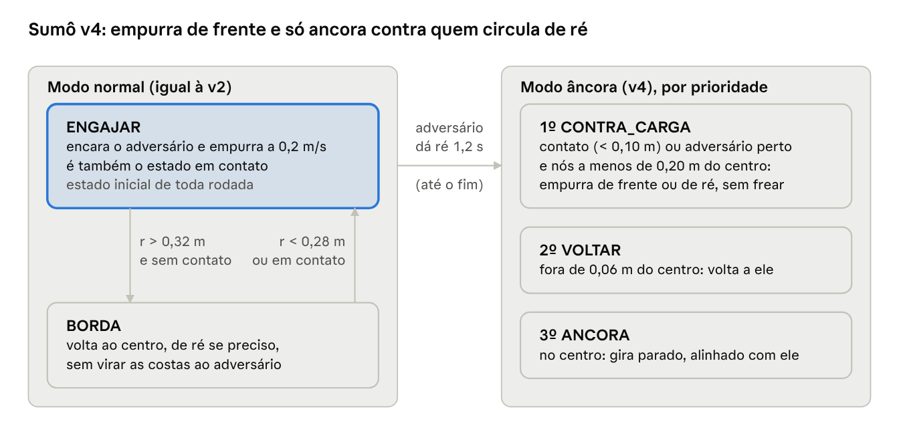
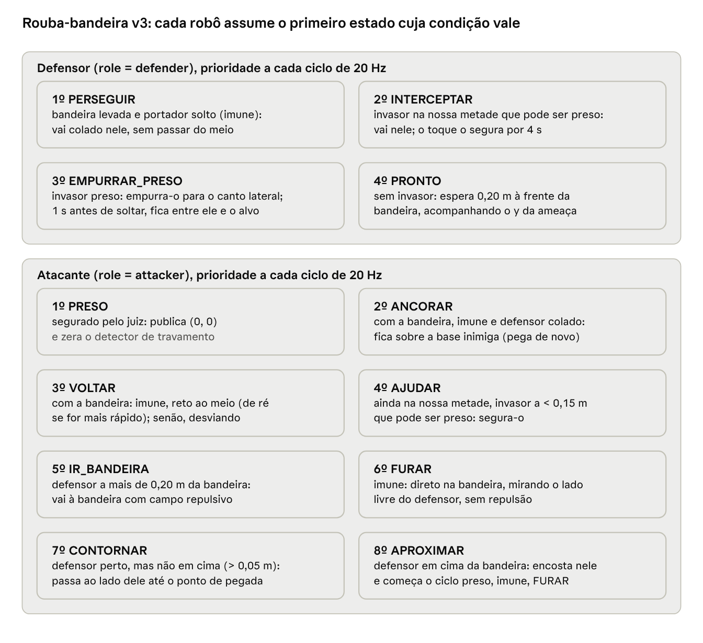
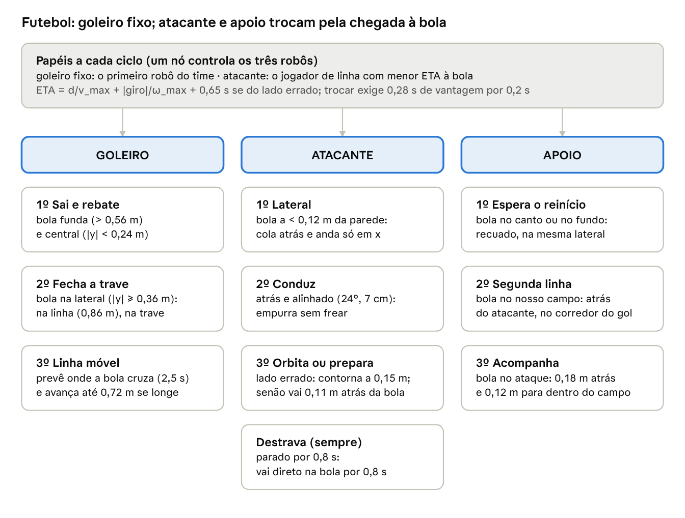
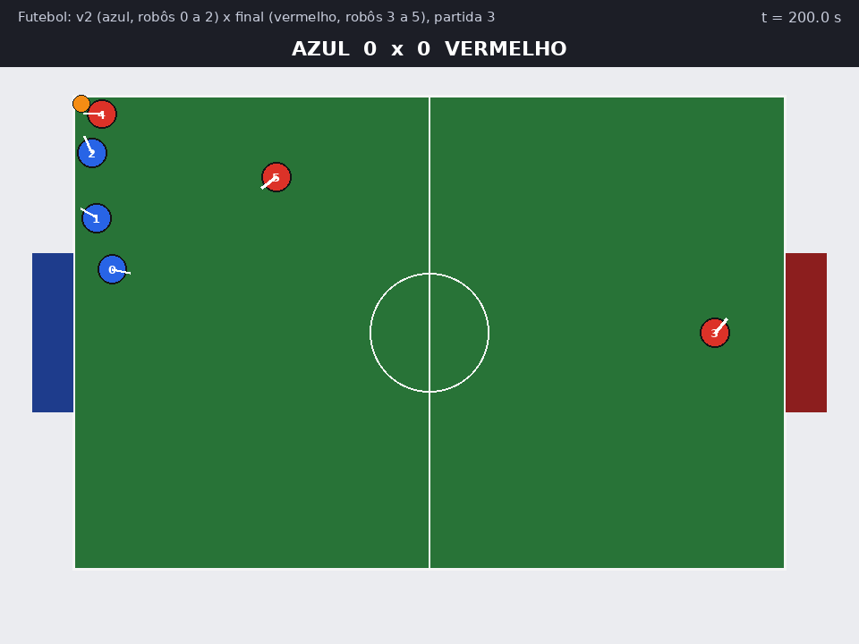

Equipe RTech Tabajara
Projeto de Sistemas Robóticos (DCC/UFMG), 2º semestre de 2026. Prof. Paulo Rezeck
26 de novembro de 2026
Repositório: https://github.com/LeanHenrique/Tech-Tabajara. Versão do torneio: tag torneio
(commit c75ca60, 25/11/2026), pasta projeto-final/. Registros, vídeos e ferramentas das partidas
deste relatório: commit 773216c.
| Jogo | Arquivo do torneio | Versão | Versão anterior |
|---|---|---|---|
| Sumô | projeto-final/sumo.py | v4 (âncora no centro) | exercicios/sumo/sumo_v2.py |
| Rouba-bandeira | projeto-final/ctf.py | v3 (defesa ativa e ciclo de imunidade) | exercicios/ctf/ctf_v2.py |
| Futebol | projeto-final/soccer.py | final (condução contínua, goleiro e lateral) | exercicios/soccer/soccer_v2.py |
As três versões finais rodaram 30 séries de teste no simulador, cerca de 3 h de jogo, nos dois lados, sem nenhuma exceção nem travamento. Contra adversário parado, venceram todas as rodadas e partidas. Contra a versão anterior, o rouba-bandeira venceu as 6 partidas (29×0) e o futebol venceu 5 e empatou 1 (21×0). O sumô empatou as 40 rodadas (Seções 3 a 5).
Cada jogo é um arquivo autossuficiente (sumo.py, ctf.py, soccer.py) que roda como nó ROS
no simulador do kit. Seguimos o ciclo da disciplina: medir antes de construir, registrar cada decisão com a evidência e
documentar o que não funcionou.
world.py, scenarios/*.py) para saber as regras exatas.
Por exemplo: a força de cada robô é limitada a 0,20 N por eixo do mundo, e no CTF o raio de segurar (0,10 m) é
maior que o de pegar a bandeira (0,07 m).*_v1.py, *_v2.py em exercicios/<jogo>/) para comparar e
para voltar atrás se uma mudança piorasse.sumo_tech,
sumo_dodger, ctf_tech, ctf_sticky, soccer_nyx etc.). Não são o código real dos
adversários.Protocolo das partidas deste relatório (26/11/2026). Os resultados das Seções 3 a 5 vêm do simulador do kit
(psr_sim, mesma física e mesmo juiz), com os arquivos dos jogos sem alteração. Para rodar as partidas
acelerado, usamos um driver em lockstep (tools/lockstep.py): ele troca o ROS e a ponte por um barramento
em processo com relógio simulado. A ponte republica o estado a 25 Hz, como o hero_bridge.py, e cada nó roda no
seu rospy.Rate (20 Hz), com uma fase própria. Os planos de cada série estão em tools/planos/.
sumo_tech.Os três arquivos seguem as regras da Seção 3 do enunciado. Usam só biblioteca padrão, numpy, rospy,
mensagens do ROS e psr_hero.utils, e não leem nem gravam arquivos. O lado vem dos parâmetros do nó
(~robot, ~opponent, ~team, ~role, ~opponents), sem cor, id ou sinal de
x fixos no código. Cada nó publica só no cmd_vel do próprio time, e o verificador do professor
(projeto-final/verificar.py) passa nos três.
O robô é diferencial, com |v| ≤ 0,20 m/s e |ω| ≤ 4 rad/s, e para se ficar 0,5 s sem comando. Todos os
comportamentos usam o mesmo controlador “ir até um ponto” (go_to), copiado em cada arquivo:
Com ré habilitada e |eθ| > 90°, o controlador inverte o heading-alvo e usa v < 0, para não dar meia-volta. O termo cos eθ faz o robô girar no lugar quando o alvo está de lado. O termo d/dslow freia linearmente perto do alvo; com dslow ≈ 0 o robô chega ao alvo em velocidade máxima, o que usamos para empurrar.
| Ganho ou parâmetro | Sumô | Rouba-bandeira | Futebol |
|---|---|---|---|
| Kω (giro) | 5,0 | 5,0 | 5,2 (goleiro: 4,5) |
| vmax | 0,20 m/s | 0,20 m/s | 0,20 m/s |
| dslow padrão | 0,05 m (empurrão: ≈ 0) | 0,05 m (perseguição: 0,001 m) | 0,03 a 0,04 m |
| Frequência do laço | 20 Hz | 20 Hz | 20 Hz |
O rouba-bandeira acrescenta um campo repulsivo (steer): o alvo vira a soma do vetor unitário para o
objetivo com uma repulsão de cada oponente a menos de Rrep. A repulsão tem módulo
G(Rrep − d)/Rrep, com Rrep = 0,22 m e G = 2,0. O
resultado passa pelo go_to a 0,2 m à frente.
Robôs que podem enroscar (atacante do CTF e jogadores de linha do futebol) têm um detector de travamento. Comando alto com o robô parado por Tstuck (1,5 s no CTF, 1,3 s no futebol) dispara uma ré curta (0,4 s e 0,35 s) com giro.
A v4 venceu 40 de 40 rodadas contra o robô parado, 20 em cada lado, em cerca de 3,8 s por rodada. Contra a v2 empatou as 40 por tempo: as duas empurram de frente e as forças saturadas se anulam.
É um robô só. A ideia é encarar o adversário e empurrar de frente na velocidade máxima, com a borda tratada antes de tudo. A borda só vale fora de contato: em contato o robô nunca recua. Essa foi a correção da v1 para a v2. Recuar em contato tira o nosso empurrão, e o adversário nos leva para fora.
A v4 acrescenta um modo de âncora, pensado para o R2D2 da liga, que circula de ré. Se o adversário anda de ré fora de contato por 1,2 s acumulados, o robô passa a segurar o centro do ringue. De lá, gira alinhado com o adversário e só contra-carrega quando ele chega perto, para chegar ao impacto com velocidade. Assim não o persegue até a borda.

A cada ciclo de 20 Hz o nó escolhe o estado (Figura 1); um início de rodada (o round_time volta a zero)
devolve o robô a ENGAJAR. A âncora, uma vez ativada, vale até o fim do processo, porque o adversário é o mesmo.
Todos os estados usam o go_to da Seção 2 com Kω = 5. Em ENGAJAR e na contra-carga o alvo é a
posição atual do adversário, com dslow ≈ 0, para chegar ao contato sem desacelerar. Em BORDA o alvo é o
centro do ringue, com ré habilitada, para não virar as costas ao adversário. As constantes estão na Tabela 3.
| Constante | Valor | Para quê e de onde vem |
|---|---|---|
KW | 5,0 | ganho de giro do go_to |
| dslow no empurrão | ≈ 0 | chega ao contato sem desacelerar |
R_SAFE | 0,32 m | a frenagem a 0,2 m/s gasta 3,8 cm (E3) e a queda é com o centro além de 0,40 m |
| Histerese da BORDA | 0,04 m | sai da BORDA abaixo de 0,28 m; evita oscilar |
CONTACT_DIST | 0,10 m | entre centros (dois raios = 0,074 m); em contato não recua |
RE_MIN, RE_ATIVA, RE_ESQUECE | 0,08 m/s; 1,2 s; 0,5 s/s | ré do adversário que conta, tempo para ativar a âncora, esquecimento |
R_ANCORA, CARGA_PERTO, CARGA_DIST, CARGA_RMAX | 0,06; 0,14; 0,22; 0,20 m | raios da âncora e da contra-carga |
| Confronto | Nosso lado | Rodadas | Vitórias | Empates | Derrotas | Observação |
|---|---|---|---|---|---|---|
| v4 × parado | hero_0 | 20 | 20 | 0 | 0 | cada vitória em ≈ 3,8 s |
| v4 × parado | hero_1 | 20 | 20 | 0 | 0 | idem |
| v4 × v2 | hero_0 | 20 | 0 | 20 | 0 | todos por tempo (40 s) |
| v4 × v2 | hero_1 | 20 | 0 | 20 | 0 | todos por tempo (40 s) |
v4 × sumo_tech | hero_0 | 20 | 0 | 20 | 0 | todos por tempo (40 s) |
v4 × sumo_tech | hero_1 | 20 | 0 | 20 | 0 | todos por tempo (40 s) |
Nos empates com a v2, os robôs ficaram em contato 98% do tempo e nenhum se afastou mais de 0,19 m do centro (posições
gravadas a 10 Hz). É o equilíbrio previsto: duas forças de 0,20 N opostas somam zero e o par fica parado (Seção 6, E1 e
E2). A âncora não foi ativada em nenhuma série, porque nenhum dos adversários anda de ré. Contra o sparring
sumo_tech, nossa réplica do líder da liga, foram 20 empates em 20 rodadas em cada lado, também com 98% do tempo
em contato. Os registros estão em exercicios/registros/final/.
sumo_tech. Não temos uma tática medida que vença esse adversário. Inclinar o heading não ajudou (E2: 10 empates
em 10 com ϕ = 35°).sumo_dodger, a v1 fez 5
vitórias, 3 derrotas e 4 empates em 12 rodadas. A v2 fez 31 vitórias e 0 derrotas em 31. Foi uma execução de cada, em
23/11. O dodger tem o mesmo defeito da v1, então isso não prova vitória contra adversários reais.Cada time tem um defensor e um atacante, um processo por robô, com o papel no parâmetro ~role. O
jogo se decide pelo ciclo de prisão do juiz. Na própria metade, tocar um invasor (< 0,10 m) o segura por 4 s. Depois
ele fica imune por 1,5 s, e o raio de pegar a bandeira é 0,07 m. Os dois robôs leem o held do
/game/state, no relógio do próprio jogo, para saber quem está preso e até quando cada um fica imune.
Cada robô assume o primeiro estado da lista cuja condição vale (Figura 2). Não há memória de estado além do detector de travamento e dos tempos de prisão e imunidade.

Os dois papéis usam o go_to com Kω = 5. O atacante passa pelo campo repulsivo (Seção 2) em
IR_BANDEIRA, VOLTAR e CONTORNAR, e vai direto, sem repulsão, em FURAR. O defensor persegue e intercepta com
dslow = 0,001 m, para chegar ao toque sem frear. As constantes estão na Tabela 5.
| Constante | Valor | Para quê |
|---|---|---|
KW | 5,0 | ganho de giro do go_to |
R_REP, REP_GAIN | 0,22 m; 2,0 | campo repulsivo dos oponentes (maior que o raio de segurar, 0,10 m) |
T_STUCK, STUCK_BACK | 1,5 s; 0,4 s | detector de travamento: ré curta com giro |
PRONTO_AVANCO, PRONTO_Y | 0,20 m; 0,5 | espera do defensor à frente da bandeira, seguindo metade do y da ameaça |
MEIO_MARGEM | 0,03 m | o defensor não passa do meio |
DEPOSITO_X, DEPOSITO_Y | 0,45 m; 0,55 m | canto para onde o invasor preso é empurrado |
LADO_ANTES | 1,0 s | antes de o invasor ser solto, o defensor para de empurrar e bloqueia |
PLANTADO_DIST, SOBRE_BANDEIRA | 0,20 m; 0,05 m | defensor inimigo “guardando” e “em cima” da bandeira |
CONTORNO_R, FURAR_LADO | 0,14 m; 0,06 m | contorno do defensor; desvio da mira quando imune |
AJUDA_RAIO | 0,15 m | o atacante segura um invasor perto dele na nossa metade |
ANCORA_PERTO, ANCORA_RAIO, ANCORA_TOL | 0,13; 0,12; 0,04 m | condições e tolerância da âncora sobre a base inimiga |
FLAG_MOVED | 0,05 m | nossa bandeira a mais disso da base = foi levada |
A v3 não sofreu ponto em nenhuma das 12 partidas de 5 min. Contra o time parado, fez 22 pontos em cada partida, nos dois lados. Contra a v2, venceu as 6, por 29×0 no total (12 como azul e 17 como vermelho).
| Confronto | Nosso lado | Partida 1 | Partida 2 | Partida 3 | Total (pró × contra) |
|---|---|---|---|---|---|
| v3 × parado | azul | 22×0 | 22×0 | 22×0 | 66×0 |
| v3 × parado | vermelho | 22×0 | 22×0 | 22×0 | 66×0 |
| v3 × v2 | azul | 3×0 | 3×0 | 6×0 | 12×0 |
| v3 × v2 | vermelho | 7×0 | 6×0 | 4×0 | 17×0 |
O atacante da v2 foi preso de 48 a 51 vezes por partida e nunca pontuou: a defesa ativa interceptou as tentativas antes de virarem ponto. Do nosso lado, o atacante foi preso de 38 a 45 vezes, mas o ciclo preso, imune, FURAR e a âncora sobre a base inimiga renderam os pontos. Na partida 3 como azul, por exemplo, o atacante entrou em FURAR 26 vezes e em ANCORAR 18 vezes, e marcou 6.
| Confronto (lado da v3) | Nosso defensor prendeu o atacante da v2 | Nosso atacante foi preso |
|---|---|---|
| v3 azul × v2 (3 partidas) | 50, 51, 48 | 45, 44, 41 |
| v3 vermelho × v2 (3 partidas) | 48, 48, 48 | 38, 40, 43 |
Contra o time parado, as três partidas de cada lado deram o mesmo placar (22×0): sem adversário, o atacante repete o mesmo ciclo de ida e volta. Contra a v2, cada partida teve semente e fase próprias, e os placares variaram de 3 a 7 pontos.
ctf_camper, em 23/11. A v2
passou a usar a imunidade e fez 2×0 contra o ctf_tech nos dois lados. A tática de contornar o defensor ativo
(ctf_v3_contornar.py) deu 0×0 contra o ctf_sticky e não foi para a liga. A v3 final reaproveitou a
ideia só para o caso em que o defensor não está em cima da bandeira (CONTORNAR).Um único nó controla os três robôs do time, e o lado vem de ~team. O primeiro robô do time é sempre o
goleiro. Os dois jogadores de linha alternam entre atacante e apoio: atacante é quem chega antes à bola
pelo lado certo. A troca tem histerese, para não oscilar quando os dois estão à mesma distância.
O atacante é escolhido pelo menor tempo estimado até a bola (Figura 3):

A versão final veio de muitas iterações pequenas, de 24 e 25/11: goleiro que fecha a trave, condução contínua, segunda bola e bola na lateral. A v2 tinha condução por “chutes” (prepara, alinha, chuta), goleiro preso à linha (só previa o cruzamento, sem sair) e apoio que seguia o atacante.
Os jogadores de linha usam o go_to com Kω = 5,2 e o goleiro com 4,5, sempre com ré
habilitada. Na condução o atacante não usa o go_to: mira 0,08 m à frente da bola e mantém
v = vmax max(0,65; cos e) enquanto o erro de rumo for menor que 0,9 rad, para não frear nas
correções de ângulo. As constantes estão na Tabela 8.
| Constante | Valor | Para quê |
|---|---|---|
KW (linha / goleiro) | 5,2 / 4,5 | ganho de giro do go_to |
Condução (push_cmd) | mira 0,08 m à frente; v = vmax max(0,65; cos e) se |e| < 0,9 rad | empurra a bola sem frear nas correções de ângulo |
PREP, R_ORB, ORB_STEP | 0,11 m; 0,15 m; 0,85 rad | ponto de preparação atrás da bola e passo da órbita |
ALIGN_ERR, ALIGN_LAT | 0,42 rad; 0,07 m | tolerâncias para começar a conduzir |
DRIBBLE_KEEP_DIST, _LAT, _ERR | 0,35 m; 0,15 m; 0,85 rad | tolerâncias para continuar conduzindo |
SIDELINE_ZONE, WALL_STICK_Y | 0,12 m; 0,555 m | faixa da lateral e linha em que o robô encosta na parede |
SWITCH_ETA_MARGIN, SWITCH_HOLD_TIME | 0,28 s (+0,35 s conduzindo); 0,20 s | histerese da troca de atacante |
KEEPER_LINE_X, KEEPER_SWEEP_X, KEEPER_Y | 0,86; 0,72; 0,20 m | linha, avanço máximo e limite lateral do goleiro |
KEEPER_PREDICT_TIME, filtro do goleiro | 2,5 s; α = 14 Δt (interceptando) ou 6 Δt | previsão do cruzamento e suavização do alvo |
KEEPER_CLEAR_DEPTH, _CLEAR_Y, _MAX_OUT_X | 0,56 m; 0,24 m; 0,52 m | quando o goleiro sai e até onde |
SUPPORT_BACK, SUPPORT_SIDE | 0,18 m; 0,12 m | posição do apoio no ataque |
IDLE_S, T_STUCK, STUCK_BACK | 0,8 s; 1,3 s; 0,35 s | destravamento do atacante e detector de travamento |
A versão final não sofreu gol em nenhuma das 12 partidas de 5 min. Contra o time parado, fez de 28 a 29 gols por partida, nos dois lados. Contra a v2, venceu 5 e empatou 1 (0×0), por 21×0 no total.
| Confronto | Nosso lado | Partida 1 | Partida 2 | Partida 3 | Total (pró × contra) |
|---|---|---|---|---|---|
| final × parado | azul | 29×0 | 28×0 | 29×0 | 86×0 |
| final × parado | vermelho | 28×0 | 29×0 | 28×0 | 85×0 |
| final × v2 | azul | 4×0 | 4×0 | 4×0 | 12×0 |
| final × v2 | vermelho | 5×0 | 4×0 | 0×0 | 9×0 |
Contra o parado, sai um gol a cada ≈ 10,5 s, incluindo o reinício do juiz. Contra a v2, a bola esteve no campo adversário em 94% a 99% dos quadros gravados a 10 Hz, nas 6 partidas.

soccer_v3_apoio.py) fez 3 e 3
gols contra o parado em 68 s, contra 5 e 4 da v2. A condução perseguindo a bola, em 23/11, fez 2 gols em 67 s, contra 5.
Ambos pioraram e foram descartados naquele momento. A condução contínua da versão final foi refeita depois, por outro
caminho.Antes de escolher a estratégia do sumô, medimos no simulador quatro situações, com nós exp_*.py próprios. Os
dados estão em exercicios/registros/fase1/ e a análise em exercicios/tools/fase1_analise.py, todos de
23/11.
| Exp. | O que mediu | Resultado |
|---|---|---|
| E3 frenagem | distância até parar ao zerar o comando | 3,76 cm a 0,20 m/s (3,50 a 3,89) e 1,57 cm a 0,10 m/s; parada em ≈ 0,45 s |
| E1 frontal | par em contato, adversário parado, 6 rodadas | o par anda a 0,099 m/s, a média das velocidades-alvo (0,2 e 0); o parado caiu em 6 de 6, em ≈ 2,25 s |
| E1 lateral | idem, empurrando pelo flanco, 6 rodadas | o par anda a 0,04 m/s; o adversário caiu em 0 de 6 e o atacante em 6 de 6 (escorrega e sai primeiro) |
| E2 inclinação | atacante com heading inclinado ϕ contra um adversário que encara, 10 rodadas por ângulo | ϕ = 0°: 10 empates, deslocamento lateral 0,4 cm. ϕ = 35°: 10 empates, 4,0 cm em ≈ 43 s |
O que isso explica. Cada robô aplica no máximo 0,20 N em cada eixo do mundo (FORCE_MAX no
world.py). Duas forças saturadas e opostas somam zero, e o par mantém a velocidade que tem. Quem decide é o
momento no impacto, não a força. Disso saíram três decisões:
O excesso de frenagem sobre a física pura (≈ 1,5 cm) equivale a ≈ 115 ms de latência. Esse valor é dedução a partir de dois pontos, não foi medido à parte. Não feito: E2 com ϕ = 20° e 50°, E4 (taxa de pegada da bandeira no CTF) e E5 (chute no futebol).
Nenhum dos três nós travou ou levantou exceção nas 30 séries de teste, que somam cerca de 3 h de jogo simulado. Os logs têm 0 mensagens de erro e nenhum nó morreu. O que limita o resultado é a estratégia, não a robustez.
| Limitação | Evidência | Proposta |
|---|---|---|
| Sumô empata com quem empurra de frente | 40 empates em 40 contra a v2; 40 em 40 contra o sumo_tech | medir E2 com ϕ = 20° e 50° e um ataque que ganhe momento antes do impacto (recuar e recarregar fora de contato) |
| Âncora do sumô não validada | nenhuma ativação nos testes; nenhum sparring anda de ré | fazer um sparring que circule de ré, como o R2D2 observado |
| CTF pontua devagar contra defensor perto da bandeira | 12 e 17 pontos em 3 partidas contra a v2; de 5 a 15 prisões por ponto; até 157 s sem ponto | no FURAR, mirar a bandeira pelo lado oposto ao do contato anterior, ou alternar a aproximação |
| Futebol prende a bola no canto adversário | bola no canto em 30% a 82% do tempo em 5 de 6 jogos contra a v2; 246 s parada no 0×0 | no canto, puxar a bola para o meio (empurrar em y, de dentro para fora) em vez de seguir só em x |
| Amostras pequenas | 3 partidas por confronto; contra o parado o CTF repete 22×0 | mais sementes e repetir na máquina com ROS, onde a latência introduz variação |
| Driver sem latência | os testes deste relatório não têm a rede do ROS | repetir as séries no kit com ./run.sh run (Seção 8) |
| Sparrings são réplicas nossas | sumo_tech, ctf_tech, soccer_nyx feitos a partir de observação da liga | gravar partidas reais da liga e comparar |
O que aprendemos na disciplina e aplicamos aqui. Medir antes de decidir: os experimentos E1 a E3 derrubaram a
hipótese do arrasto lateral antes de ela virar código. Separar robustez de estratégia: publicar (0, 0) desde o primeiro
ciclo, nunca morrer e destravar. Congelar versões para comparar com dados. E registrar o que não funcionou, com o porquê,
em relatorio/DECISOES.md.
Tudo o que este relatório cita está no repositório https://github.com/LeanHenrique/Tech-Tabajara. O
readme.md da raiz explica como rodar cada jogo no kit e como repetir as partidas deste relatório.
Os vídeos são vistas de cima, desenhadas a partir das posições gravadas nas partidas deste relatório. Mostram placar, tempo e mensagens do juiz; o contorno amarelo marca um robô preso.
| Pasta ou arquivo | Conteúdo |
|---|---|
projeto-final/ | os três arquivos do torneio (tag torneio) |
exercicios/<jogo>/<jogo>.py | versão final de cada jogo, igual à do torneio |
exercicios/<jogo>/*_v1.py, *_v2.py | versões anteriores usadas nas comparações |
exercicios/<jogo>/ (outros) | sparrings e nós dos experimentos de física |
exercicios/registros/fase1/ | dados dos experimentos E1 a E3 |
exercicios/registros/final/ | as 30 séries deste relatório: placar, eventos e erros (.json), log dos nós (.log), posições a 10 Hz (*_frames.json) e resumo.csv |
exercicios/videos/ | sumo_final_x_parado.mp4 (65 s), rouba_bandeira_final_x_v2.mp4 (75 s), futebol_final_x_v2.mp4 (90 s) |
tools/lockstep.py, tools/planos/, tools/render.py | driver das partidas, planos de cada série e gerador dos vídeos |
tools/sync.sh, tests/ | cópia para projeto-final/ com o verificador do professor; testes offline |
relatorio/DECISOES.md | cada decisão com a evidência, inclusive as descartadas |
relatorio/fonte/ | fonte deste relatório (HTML e figuras) |
Para repetir no kit (com ROS, como no torneio), depois de copiar os arquivos do jogo para a pasta
exercicios/ do kit, como explica o readme.md:
./run.sh run sumo robot1:=none # sumô contra robô parado ./run.sh run sumo robot1:=sumo_v2.py # final (hero_0) x v2 (hero_1) ./run.sh run ctf red:=ctf_v2.py # rouba-bandeira: final (azul) x v2 ./run.sh run soccer blue:=soccer_v2.py # futebol: v2 (azul) x final (vermelho)
Para repetir as séries deste relatório (sem ROS, acelerado):
KIT="Trabalho Prático 5"
"$KIT/.venv/bin/python" tools/lockstep.py --kit "$KIT/sim" \
--utils "$KIT/ros/psr_hero/src" \
--plan tools/planos/sumo.json tools/planos/ctf.json tools/planos/soccer.json \
--out exercicios/registros/final --jobs 15